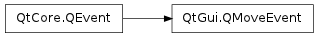

QMoveEvent ¶

Detailed Description ¶
The PySide.QtGui.QMoveEvent class contains event parameters for move events.
Move events are sent to widgets that have been moved to a new position relative to their parent.
The event handler QWidget.moveEvent() receives move events.
See also
- class PySide.QtGui. QMoveEvent ( pos , oldPos ) ¶
-
Parameters: - pos – PySide.QtCore.QPoint
- oldPos – PySide.QtCore.QPoint
Constructs a move event with the new and old widget positions, pos and oldPos respectively.
- PySide.QtGui.QMoveEvent. oldPos ( ) ¶
-
Return type: PySide.QtCore.QPoint Returns the old position of the widget.
- PySide.QtGui.QMoveEvent. pos ( ) ¶
-
Return type: PySide.QtCore.QPoint Returns the new position of the widget. This excludes the window frame for top level widgets.